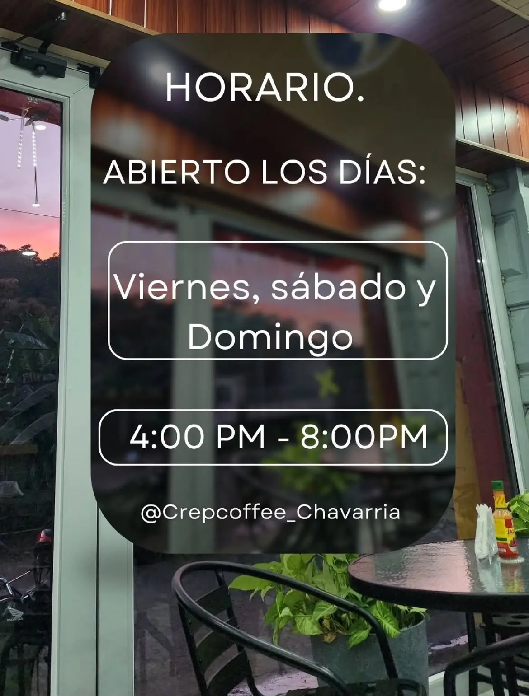

Crepas dulces
Crepas preparadas con ingredientes dulces y combinaciones para compartir.
Hecho al momento - Chavarría
Crepas dulces, bebidas frías y comida casual preparada con cariño para compartir sin prisa.

Avance de los productos principales que se incluirán en la landing page.
Crepas preparadas con ingredientes dulces y combinaciones para compartir.

Bebidas refrescantes con sabores variados, ideales para acompañar los antojitos.

Opciones saladas como quesabirrias y otros platillos preparados al momento.
Crepcoffee Chavarría es un emprendimiento familiar ubicado en Chavarría, creado para ofrecer antojitos, bebidas y crepas durante los fines de semana.
Esta sección queda como avance para completar luego con la información final del negocio.

Muy rico y recomendado para compartir en familia.
Cliente de Crepcoffee
Estamos ubicados en Chavarría. Próximamente se agregará el enlace exacto de ubicación.
Crepcoffee Chavarría